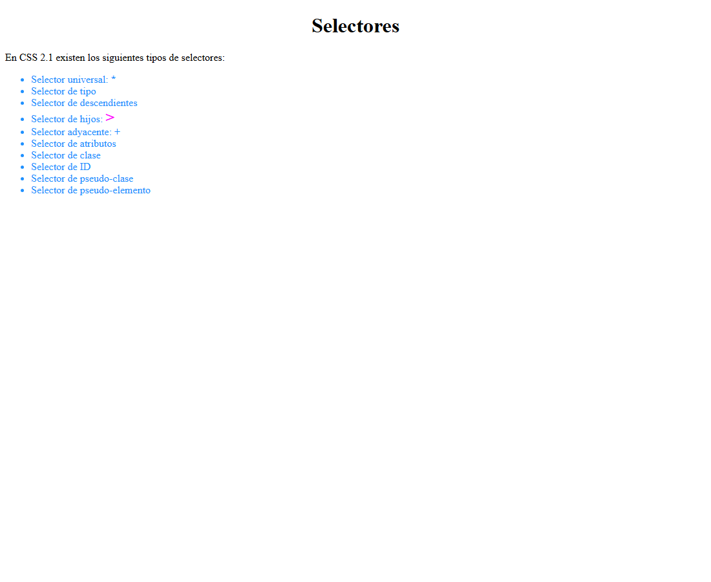

Selectores
En CSS 2.1 existen los siguientes tipos de selectores:
- Selector universal: *
- Selector de tipo
- Selector de descendientes
- Selector de hijos: >
- Selector adyacente: +
- Selector de atributos
- Selector de clase
- Selector de ID
- Selector de pseudo-clase
- Selector de pseudo-elemento
Resultado
